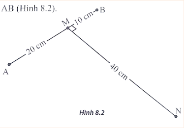

(SBT - CTST) Trong thí nghiệm giao thoa sóng trên mặt nước, hai nguồn sóng kết hợp cùng pha đặt tại hai điểm $A$ và $B$ cách nhau $30\text{ cm}$. Xét điểm $M$ nằm trên đoạn $\text{AB}$ và cách $A$ $20\text{ cm}$; điểm $N$ nằm trên mặt nước và cách $M$ $40\text{ cm}$, $\text{MN}$ vuông góc với $\text{AB}$ (hình 8.2).

a. Với tần số của hai nguồn bằng $10\text{ Hz}$ thì tại $N$ có sóng với biên độ cực đại và giữa $N$ với đường trung trực của $\text{AB}$ không có dãy cực đại. Tính tốc độ truyền sóng.
b. Với tốc độ truyền sóng tính được ở câu a, để điểm $N$ đứng yên thì tần số của hai nguồn phải bằng bao nhiêu?